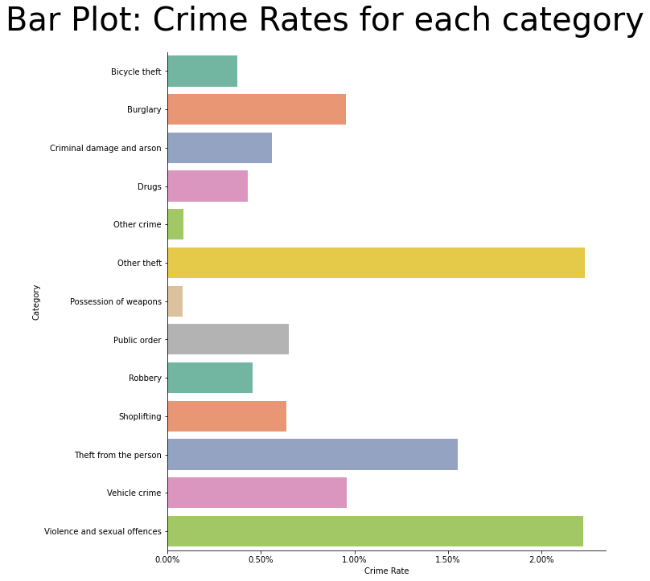
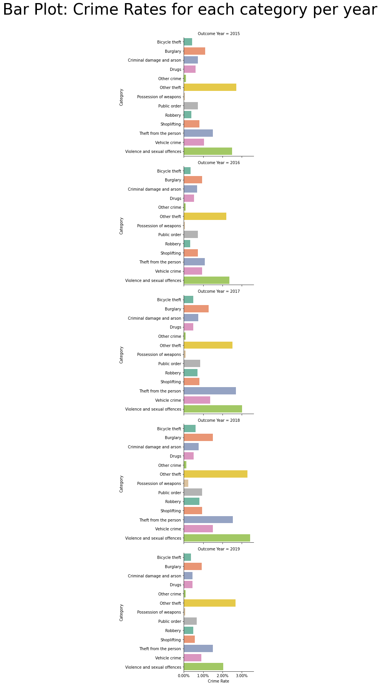

import os
import pandas as pd
import numpy as np
import matplotlib.pyplot as plt
from matplotlib.ticker import PercentFormatter
import seaborn as sns
%matplotlib inline
# constants
FOLDER_INTERIM = os.environ.get('DIR_DATA_INTERIM')
DATA_CRIME_CATEGORY = 'df_category.csv'
DATA_POP = 'df_pop.csv'
FIG_SIZE = (30, 15)
TITLE_SIZE = 40
df_category = pd.read_csv(filepath_or_buffer=FOLDER_INTERIM + "/" + DATA_CRIME_CATEGORY,
parse_dates=["Outcome Date"])
df_pop = pd.read_csv(filepath_or_buffer=FOLDER_INTERIM + "/" + DATA_POP)
Re-shape data so it is in the right format for plotting.
# aggregate to category level
df_crime = df_category.groupby(by=["Outcome Year", "Category"]).agg(func={"Crime Incidences": 'sum'}).reset_index()
df_camden = df_pop.groupby(by=["Outcome Year"]).agg(func={"Population": 'sum'})
df_crime = df_crime.merge(right=df_camden, on=["Outcome Year"])
df_crime["Crime Rate"] = df_crime["Crime Incidences"] / df_crime["Population"]
# aggregate to Camden level
df_crime_camden = df_crime.groupby(by=["Category"]).agg(func={"Crime Incidences": 'sum'}).reset_index()
df_crime_camden["Crime Rate"] = df_crime_camden["Crime Incidences"] / df_camden["Population"].sum()
1.3. Explore Crime by Categories¶
In this section, we explore further general crime rates by at Camden through the categories of crime:
Bar plot - to understand the crime rates.
1.3.1. Crime by category¶
We see that the following categories of crime have the highest rates of offence.
Violence and sexual offences
Other theft
Theft from the person
ax = sns.catplot(x="Crime Rate", y="Category", data=df_crime_camden, kind='bar', ci=None, palette='Set2', height=10, orient='h')
ax.fig.suptitle(t="Crime Rates for each category", fontsize=TITLE_SIZE)
ax.fig.subplots_adjust(top=0.9)
# use percentages on x-axis
for x in ax.axes.flat:
x.xaxis.set_major_formatter(PercentFormatter(xmax=1, decimals=2))

1.3.2. Crime by category by year¶
Similar to what was seen for all years, across each year, the highest rates of crime committed were:
Violence and sexual offences
Other theft
Theft from the person
ax = sns.catplot(x="Crime Rate", y="Category", data=df_crime, kind='bar', col="Outcome Year", ci=None, palette='Set2', orient='h')
ax.fig.suptitle(t="Crime Rates for each category per year", fontsize=TITLE_SIZE)
ax.fig.subplots_adjust(top=0.8)
# use percentages on x-axis
for x in ax.axes.flat:
x.xaxis.set_major_formatter(PercentFormatter(xmax=1, decimals=2))

Trying to do crime by year, by ward and by category gets busy so explore alternative methods - a graph database!